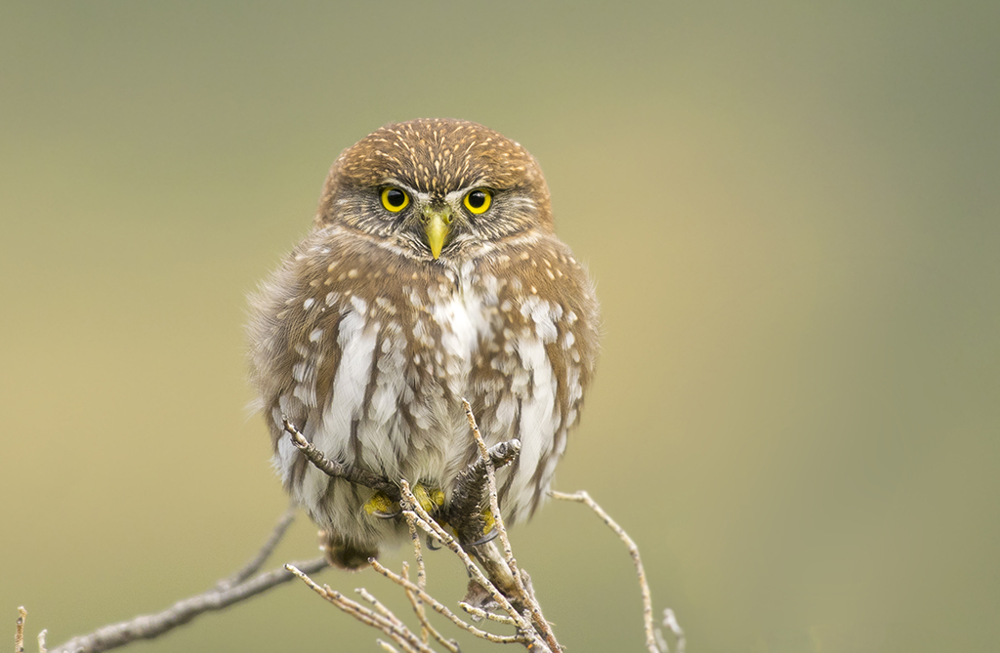

Informacion general
El Chuncho es una de las aves rapaces más pequeñas de sudamerica. Habita en bosques templados de Chile y Argentina, y destaca por su tamaño compacto y su mirada intensa.
Nombre: Chuncho
Nombre Científico: Glaucidium nanum
Distribución: Habita en el sur de Chile y Argentina